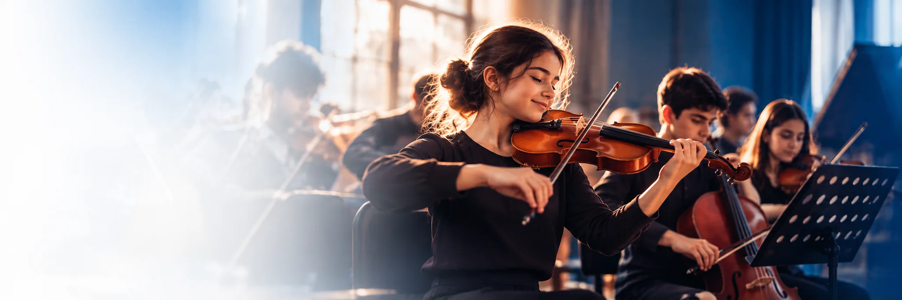
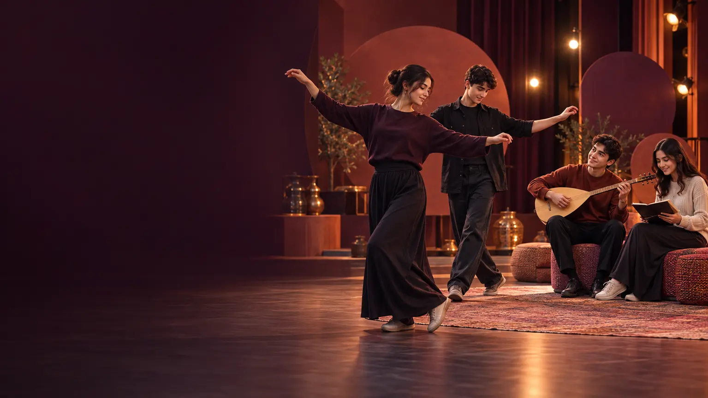

Sanat alanında
32NOVA AKADEMİ
Potansiyeli
performansa dönüştürüyoruz.
Sanatın, sporun ve sahne deneyiminin gücünü; her öğrencinin gelişim yolculuğuna göre tasarlanan bütüncül bir eğitim ekosisteminde bir araya getiriyoruz.
YETENEKDİSİPLİNDENEYİMGELİŞİM
01 — SEÇİCİ KONTENJAN SİSTEMİ
Her öğrenciye
yakından eşlik eden yapı.
NOVA’nın faaliyet alanlarında yer almak, doğrudan kayıt yoluyla gerçekleşmez. Öğrenciler, Türkiye genelindeki tarama ve çok aşamalı yetenek değerlendirme süreçlerinden geçer.
3.000değerlendirilen öğrenci
içinden seçilen sınırlı kontenjan
içinden seçilen sınırlı kontenjan
Odaklanmak için
yer açıyoruz.
Kontenjan modelimiz, seçilen öğrencilerin gelişiminin yakından takip edilmesini ve eğitim kalitesinin yüksek standartlarda sürdürülmesini amaçlar.
Spor alanında
36öğrenci
12 basketbol · 12 voleybol · 12 futsal02 — EĞİTİM VE DENEYİM ALANLARI
Gelişimi tek bir
alanda bırakmıyoruz.

01
Sanat eğitimi
Sanat eğitimi
ve performans
Dans, müzik, tiyatro ve sahne sanatlarında temel, ileri ve profesyonel düzeyde programlar uygulanır.
- Teknik beceri
- Yaratıcılık
- Sahne disiplini
02
Spor eğitimi
Spor eğitimi
ve performans
Basketbol, voleybol, futbol ve futsal branşlarında teknik, fiziksel ve performans odaklı eğitim yürütülür.
- Takım ruhu
- Dayanıklılık
- Hedef odaklılık

03 — SAHNE VE PRODÜKSİYON PROJELERİ
Öğrenmenin
en güçlü hâli:
deneyim.
Konserler, dans gösterileri, tiyatro projeleri, müzikaller ve büyük ölçekli prodüksiyonlarla öğrenciler gerçek sahne deneyimi kazanır.
Her proje; sorumluluk alma, birlikte üretme ve yeteneği izleyiciyle buluşturma fırsatıdır.
04 — LİGLER, TURNUVALAR VE YARIŞMALAR
Rekabet,
gelişimin parçası.
Spor alanında seçilen öğrencilerimizin gelişimlerini uygulama ortamında sürdürebilmeleri için liglere, turnuvalara, müsabakalara ve yarışmalara katılım sağlanır.
Yetenek sistemini keşfedin →01HazırlıkTeknik ve fiziksel gelişim
02UygulamaTakım ve sahne deneyimi
03BaşarıÖlçülebilir gelişim hedefleri